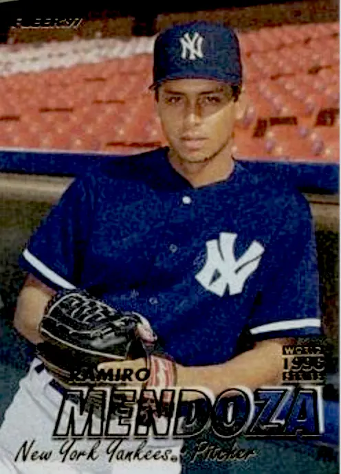

Ramiro Mendoza "El Brujo"
Career Highlights & Facts
(Facts are AI-generated and may require verification)
- Earned a nickname meaning 'The Wizard' for an ability to deceive batters with a 4-seam fastball, slider, sinker, and changeup.
- Struck out 2 future Hall of Famers looking during a 6-inning major-league debut.
- Witnessed the accidental discovery of a legendary pitch while playing catch with a teammate.
Would you like to find out more about Ramiro Mendoza?
Player Biography
Ramiro Mendoza
January 4, 2012
/
in
BioProject - Person
Panama
2004 Boston Red Sox
/
by
admin
This article was written by
Nick Malian
Ramiro Mendoza was signed as a free-agent starting pitcher in 1991 by the New York Yankees, but as his career progressed, he became a bullpen staple and occasional spot starter to support the pitching needs of both the Yankees and Boston Red Sox. The transition from starter to reliever suited Mendoza, who went 23-19 with a 5.09 ERA in 62 games as a starter and 36-21 with a 3.68 ERA in 280 games as a reliever during his 10-year major-league career. He earned the nickname El Brujo, Spanish for the Wizard, for his ability to fool batters with his four-seam fastball, slider, sinker, and changeup.
1
He was also one of three players to win a World Series for both the Yankees and the Red Sox.
2
Ramiro Mendoza was born on June 15, 1972, in the town of La Enea, in the small southern province of Los Santos, Panama.
3
He is one of several prominent major leaguers from Panama, including Hall of Famers
Rod Carew
and
Mariano Rivera
. Growing up poor in Panama with aspirations of playing baseball meant sacrificing as a family. They farmed and sold tomatoes to make ends meet and when they earned enough, Mendoza could afford bus fare to travel to the ballpark.
4
If not, he would spend the night at the ballpark to avoid paying extra fare. The scout who signed Mendoza in 1991, Herb Raybourn, said of him, “Of all the kids I’ve ever signed, he had the hardest time because he had trouble just getting to play.”
5
Mendoza debuted in the Yankees’ minor-league system with the Greensboro Hornets and the GCL Yankees in 1993 and then bounced around between Rookie and Triple-A ball until 1996, when he debuted in the majors to support an injury-laden pitching staff on May 25 against the Seattle Mariners. In front of a sold-out Kingdome, Mendoza pitched six innings and gave up seven hits and three earned runs and struck out six Mariners including
Ken Griffey Jr
. and
Edgar Martinez
, both looking, to earn his first major-league win.
6
His six strikeouts in his first game were a record for Panamanian pitchers, which was later tied by
Humberto Mejía
in 2020.
7
Mendoza appeared in 12 games in 1996 and started in 11. His second career start was in sharp contrast to his debut. Against the California Angels, he pitched only 3⅔ innings and gave up six hits. The Yankees’ offense was stifled, and the Angels won, 4-0. His next three starts were also unimpressive. In that stretch, he pitched 13⅔ innings and allowed 26 hits and 14 earned runs (9.22 ERA) and went 0-2, with one no-decision.
Mendoza earned wins in his next two starts, against the Cleveland Indians and Minnesota Twins, that brought his season record to 3-3. In his final five appearances, he made four starts and pitched in relief once, in his final game of the season. He went 1-2 with a 7.78 ERA and finished the season with a 4-5 record and a 6.79 ERA. The Yankees finished first in the AL East. Due to pitching injuries suffered by the Yankees, there was talk that Mendoza would make the playoff roster; however, that did not occur.
Mendoza’s transition to the Yankees in 1996 from their minor-league system was aided by teammates
Ruben Rivera
and Mariano Rivera.
8
Mendoza and Rivera developed a special bond that transcended the typical teammate friendship. In 1997 while having a catch with Rivera, Mendoza witnessed “a gift from God” as Rivera put it. One of the most famous pitches in baseball was born, Rivera’s devastating cutter. “The ball was moving, and (Mendoza) thought I was making the ball move,” Rivera said, claiming “I have no control over this. The ball is moving, and I have no control.” Rivera become one of the greatest closers of all time and led a modern baseball dynasty because of that pitch.
9
And although Mendoza’s career was markedly different than Rivera’s, he too played an instrumental role in his team’s success.
Mendoza began the 1997 season with Triple-A Columbus (International League). The Yankees had signed
David Wells
in the offseason, and it was unclear whether Mendoza would crack the starting rotation. However, a hernia injury landed
Dwight Gooden
on the disabled list in early April and
Kenny Rogers
was moved to the bullpen to boost his confidence, and that opened the door for Mendoza to heavily contribute in 1997.
10
Mendoza made 39 appearances (15 starts) and had an 8-6 record. As a starter, he was 5-5 with a 4.93 ERA; in relief he was 3-1, 2.93. He pitched 133⅔ innings, the most he would pitch in his major-league career. Despite logging the fifth-most innings of all Yankees pitchers during the regular season, Mendoza pitched only 3⅔ innings in two postseason games.
Mendoza was brilliant in his postseason debut. He pitched in relief in Game One of the Division Series against the Cleveland Indians. Replacing
David Cone
in the top of the fourth inning after Cone gave up six earned runs, Mendoza gave up one hit, struck out two, and did not give up a run.
11
The Yankees were unfazed by the 6-1 deficit when Mendoza entered the game: They scored eight runs over three innings to win, 8-6. The Yankees manager
Joe Torre
said of Mendoza’s performance, “I thought, obviously he was the difference. He put the tourniquet on it.”
12
Game Four of the ALDS was a different story for Mendoza. He replaced Mariano Rivera to start the ninth inning of a 2-2 game. Cleveland’s
Marquis Grissom
led off the inning with a single to right field.
Bip Roberts
sacrificed Grissom to second. Then
Omar Vizquel
slapped a single up the middle that hit off Mendoza’s glove and bounced past
Derek Jeter
, scoring Grissom for a walk-off victory. The Yankees lost the next night and were ousted from the postseason.
The 1998 Yankees capped off a historic 114-win regular season by sweeping the San Diego Padres to claim their first of three consecutive World Series titles. The 1998 season was also a career year for Mendoza. In 41 pitching appearances, 14 as a starter, he finished with a career-high 10 wins and a 3.25 ERA, a career low. Mendoza started 11 of his first 13 appearances and posted a 4-1 record. However, the debut of the Cuban phenom
Orlando Hernández
on June 3 shifted Mendoza’s role from starter to reliever. In his remaining 28 appearances during the regular season, 25 in relief and 3 as a starter, Mendoza finished with a record of 6-1, one save, and five holds.
Mendoza pitched only 5⅓ innings in the postseason. In the ALCS against Cleveland, he replaced
Andy Pettitte
with two outs in the bottom of the fifth inning with the Yankees trailing 6-1. He held Cleveland in check, giving up three hits and no runs before being replaced by
Mike Stanton
in the seventh. The Yankees lost the game 6-1.
In Game Six of the ALCS, Mendoza held Cleveland to one hit and no runs over three innings. He replaced David Cone in the top of the sixth with a 6-5 lead. The Yankees scored three more runs in the bottom of the inning and won the game and the ALCS, 9-5. Mendoza earned his first postseason hold and his first trip to the World Series.
Mendoza pitched in relief in Game Three of the World Series against the San Diego Padres. He replaced
Graeme Lloyd
in the bottom of the seventh inning with one out and the Padres leading 3-2. Mendoza struck on the first batter he faced,
Carlos Hernández
. He then gave up a soft hit to left field by
Chris Gomez
, who was thrown out by
Shane Spencer
trying to stretch it into a double. The Yankees added three runs in the eighth to take a 5-3 lead. In the bottom of the inning, Mendoza gave up a one-out double to
Quilvio Veras
. Rivera replaced Mendoza and the Padres scored a run, but Rivera closed out the ninth inning and gave Mendoza his first postseason win.
In 1999 Mendoza had a 9-9 record in 53 appearances, predominantly as a reliever. In 12 postseason games, he was limited to three pitching appearances, two in the ALCS against the Boston Red Sox and one in the World Series against the Atlanta Braves.
In Game Two of the ALCS against the Boston Red Sox, Mendoza replaced
Allen Watson
in the top of the eighth inning; he struck out
Butch Huskey
and got
José Offerman
to fly out, ending the inning. The Yankees won, 3-2. Mendoza entered Game Five in the bottom of eighth with one out and got five consecutive outs to earn his first postseason save and clinch the ALCS for the Yankees.
Mendoza’s 2000 season was highlighted by a near-perfect outing in his first start of the season, on April 15 against the Cleveland Indians. He brought the perfect game to the top of the seventh inning with one out at Yankee Stadium, when
Carlos Febles
lined a single off third baseman
Clay Bellinger’s
glove that broke up the perfect game. “I was on pace to do something special. … I just hope that in the future I get the chance to go out there and try to do something special,” Mendoza said.
13
Manager Joe Torre’s plan for Mendoza in this game was to limit him to 80 pitches. He entered the seventh inning having thrown 74. Mendoza had also developed a blister on his right middle finger which gave him problems gripping the ball. After Mendoza gave up an RBI double to
Jermaine Dye
, Torre took him out. Through 6⅔ innings, Mendoza gave up two hits and one run and earned his second win of the season.
Mendoza’s season was cut short on August 6 when he was placed on the 15-day disabled list for weakness in the back of his shoulder that also kept him out of the postseason. He pitched only 65⅔ innings in 14 games and finished with a 7-4 record.
With
Jeff Nelson
having left for the Seattle Mariners, the Yankees’ expectation for 2001 was for Mendoza to become the set-up man. However, as he recovered from shoulder surgery in 2000, the Yankees expected to be patient with Mendoza.
14
By season’s end, however, he had appeared in 56 games, pitching 100⅔ innings, the most by anyone the bullpen, and was 8-4, 3.75.
The Yankees relied heavily on Mendoza in the postseason. He pitched in eight games, three in the Division Series, three in the Championship Series, and two in the World Series, which the Yankees lost to the Arizona Diamondbacks. Against Arizona he struck out 10 batters in 12⅓ innings and had a 0.73 ERA.
In the 2002 regular season, Mendoza pitched in 62 games, the most of his career. His ERA over 91⅔ innings was 3.44 The 2002 season was the first in which he did not make a start. In the postseason, the Yankees lost to the eventual World Series champion Anaheim Angels in the Division Series. Mendoza pitched twice in relief, giving up two runs in 1⅔ innings (13.50 ERA).
In Game Four, Mendoza replaced David Wells in the bottom of the fifth inning with the Yankees trailing 6-2 and two Angels on base. Mendoza faced two batters and gave up a single and double that accounted for three runs. This was Mendoza’s final postseason appearance for the Yankees.
The Yankees cut Mendoza loose after the 2002 season. “It hurt me to see that the Yankees didn’t sign me saying they had no money,” he said.
15
Mendoza then signed a two-year, $6.5 million contract with their archrivals, the Red Sox. Red Sox general manager
Theo Epstein
said, “We’re very happy to have him in our bullpen. It is up to (manager)
Grady
(Little),
but we’ve discussed how he fits in perfectly with how we want to use our bullpen this year. He’s a versatile guy and could pitch some of our most critical innings.”
16
The 2003 season with the Red Sox was Mendoza’s worst as a professional. His record in 37 games was 3-5 with a 6.75 ERA and a 1.77 WHIP in 66⅔ innings. On July 5 Mendoza made his first start since June 2001, facing the Yankees, and pitched five shutout innings to help blow out Roger Clemens and the Yankees, 10-2. He earned his second win of the season.
Mendoza finished the 2003 season on a high note. In front of a sellout crowd at
Fenway Park
against the Baltimore Orioles on September 25, he struck out
Brian Roberts
to close out a 14-3 victory that clinched the AL wild card.
17
Mendoza did not pitch in the postseason, in which the Red Sox were eliminated by the Yankees in the ALCS.
The historic 2004 season for the Boston Red Sox did not start well for Mendoza. After he pitched one inning in the third game of the season, Mendoza was placed on the 15-day disabled list with a sore shoulder. He was reactivated on July 15 and finished the season 2-1 with three holds in 30⅔ innings, with a 3.52 ERA, better than the team ERA of 4.18.
In the Red Sox postseason run, Mendoza pitched twice, both in the ALCS against the Yankees. In
Game One
he pitched one inning, gave up a hit and hit one batter. In
Game Three
, Mendoza replaced
Bronson Arroyo
in the top of the third inning with the score tied 4-4 and gave up two runs; one on a single by
Bernie Williams
and one on a balk. Mendoza hit
Miguel Cairo
to lead off the fourth inning and was replaced by
Curt Leskanic
, who gave up a home run to
Gary Sheffield
two batters later. Cairo’s run broke the 6-6 tie and gave Mendoza the loss. He did not pitch again in the ALCS or World Series.
Mendoza was not re-signed by the Red Sox in the offseason. He signed a minor-league contract with the Yankees’ Triple-A team, the Columbus Clippers. In eight games he went 1-0 with one save and 0.75 ERA. He also pitched in two games for the Rookie Gulf Coast Yankees. On September 1, the major leagues’ roster expansion day, his contract was purchased by the Yankees.
Mendoza pitched for the Yankees the same day against the Seattle Mariners. He relieved Alan Embree in the bottom of the eighth inning with Seattle ahead 2-1. Mendoza gave up two runs and two hits and the Yankees lost 5-1. At age 33, this was Mendoza’s last major-league game appearance.
In his 10 seasons in the majors (1996-2005), Mendoza pitched in 342 games (797 innings) and finished with a 59-40 won-lost record and 16 saves. His career ERA was 4.30.
But his baseball career was not over: From 2006 to 2012, Mendoza pitched in the minor leagues, in Venezuela, and for Panama in two World Baseball Classics.
In 2006 Mendoza re-signed with the Columbus Clippers and pitched in 24 games (2-5, 6.96). In 2008-09 he pitched in Venezuela and went 4-0 with a 1.62 ERA in 21 games. He returned to the United States in 2009 and pitched in 17 games for the Newark Bears of the independent Atlantic League and earned a 4-4 record. Pitching for Panama in the 2009 WBC, Mendoza made one appearance, in an elimination game against the Dominican Republic. He pitched four innings, allowed five runs, and took the 9-0 loss.
18
In 2012, as a 40-year-old, Mendoza rejoined the Panama team in the World Baseball Classic qualifying tournament. “It is a wonderful experience,” he said. “I [am coming] to do my part to help the boys, but I know they have a lot to offer for Panama.”
19
Mendoza pitched in two games in the qualifying tournament. In the first game against Brazil, Mendoza entered the fifth inning with the score 2-2 with men on second and third. He gave up an RBI single that gave Brazil a 3-2 lead and eventual victory. In the second game he pitched, Mendoza was ejected in the seventh inning for hitting Colombia’s Steve Brown. Despite that, he earned the win for Panama and advanced to the final against Brazil. Brazil beat Panama 1-0 to advance to the tournament. Mendoza did not pitch. Of the four qualifying tournaments that year, Mendoza pitched 8⅔ innings, the most of any pitcher.
Advancing to the major leagues from a challenging and humble life in Panama, Mendoza pitched in every role imaginable, including several high-leverage situations in the regular season and playoffs. As of 2020, he resided in Florida with his wife, Cinthia, and three children. His last venture in baseball was working for a sports agency providing financial guidance to young ballplayers.
20
Sources
In addition to the sources cited in the Notes, the author consulted Baseball-reference.com.
Notes
1
TV Max, “Ten Facts About Ramiro Mendoza, ‘El Brujo’ from Santeno Who Triumphed in the Major Leagues,” TVN Panama, June 25, 2020, accessed June 6, 2022. https://www.tvn-2.com/tvmax/beisbol/ramiro-mendoza-brujo-grandes-ligas_1_1170557.html.
2
Johnny Damon
and
Eric Hinske
are the other two players. Mike Rosenstein, “Ex-Yankees World Series champ: Fenway Park gives Red Sox a huge advantage in AL Wild Card game, nj.com, October 5, 2021, accessed June 28, 2022,
https:
.
3
TV Max, “Ten Facts About Ramiro Mendoza, “El Brujo” from Santeno Who Triumphed in the Major Leagues.”
4
Jack Curry, “On Baseball; Mendoza Speaks Pitch by Pitch,”
New York Times
, October 20, 1999: D4.
5
“On Baseball; Mendoza Speaks Pitch by Pitch.”
6
Associated Press, “Griffey Not as Clutch This Time,”
Santa Cruz
(California)
Sentinel
, May 26, 1996: 16.
7
Justin Lane, “The Panamanian Humberto Mejia Will Pitch Again in the Major Leagues,” Midiario.com, August 17, 2020, accessed September 9, 2022. https:?_x_tr_sl=es&_x_tr_tl=en&_x_tr_hl=en&_x_tr_pto=sc.
8
Aurelio Ortiz G, “‘El Brujo’ Mendoza Recalled His First Spell with the Yankees 24 Years Ago,” Midario.com, August 17, 2020, accessed June 6, 2022. https:?_x_tr_sl=es&_x_tr_tl=en&_x_tr_hl=en&_x_tr_pto=sc
9
Scott Miller, “Mariano Rivera: Birth of the Cutter Was ‘Gift from God,’” Cbssports.com, July 14, 2013, accessed June 9, 2022, https:
10
“Rogers Is Sent to the Bullpen and Quickly Brought Back,”
New York Times,
June 15, 1997: Sports, 8.
11
Associated Press, “Yanks Send Message with Game 1 Rally,”
Capital
, Annapolis (Maryland) October 1, 1997: 17.
12
“Yanks Send Message with Game 1 Rally.”
13
Jack Curry, “A Brush with Perfection in Mendoza’s First Start,”
New York Times
, April 16, 2000: 4
14
Buster Olney, “Baseball Yankees Notebook; After Having Surgery, Mendoza Won’t Be Rushed Back,” nytimes.com, February 20, 2001, accessed September 7, 2022. https:
15
Aurelio Ortiz G, “‘El Brujo’ Mendoza Recalled His First Spell with the Yankees 24 Years Ago,” Midario.com May 25, 2020, accessed February 6, 2023.
16
Mark Pratt, “Red Sox OK $6.5M, Two-Year Mendoza Deal,”
Midland
(Michigan)
Daily News
, December 29, 2002, accessed September 9, 2022. https:
17
Associated Press, “Red Sox Have Wild Ride to Playoffs,”
Hays
(Kansas)
Daily News
, September 26, 2003: 12.
18
Omar Marrero, “Dominican Republic Bounces Back in WBC,”
San Diego Union-Tribune
, March 8, 2009, accessed September 10, 2022. https:
19
Jose Pineda, “Mendoza Wants to Don No. 55 for Panama,” mlb.com, accessed December 2, 2022. https:
Full Name
Ramiro Mendoza
Born
June 15, 1972 at Los Santos, Los Santos (Panama)
Stats
Baseball Reference
Retrosheet
Tags
Panama
·
2004 Boston Red Sox
Career Totals
| WAR | W | L | ERA | G | GS | SV | IP | SO | WHIP |
|---|---|---|---|---|---|---|---|---|---|
| 11.7 | 59 | 40 | 4.30 | 342 | 62 | 16 | 797.0 | 463 | 1.345 |
Statistics via Baseball-Reference.com
The Original Clue